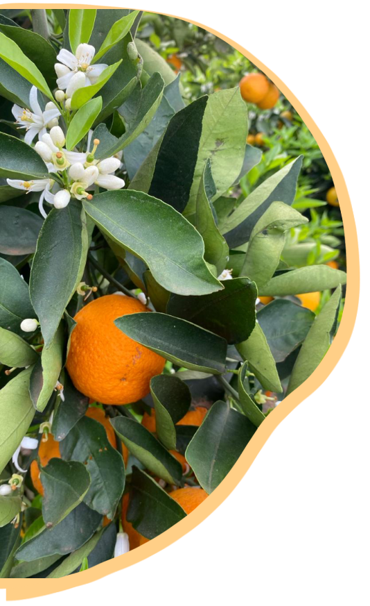

| Home | Valores | Contato | |
|  |
Quem somos
A Fazenda Progresso traz em seu slogan um diferencial importante: Em nossas Fazendas, localizadas nos municípios de Casa Branca e Aguaí - interior de São Paulo, trabalhamos a Sustentabilidade em todos os sentidos: respeito ao meio ambiente e a toda a cadeia produtiva que passa por colaboradores, clientes, e comunidade.
Alimentar as pessoas com frutos de qualidade, com saúde e sabor. |
© Todos os direitos reservados |
|